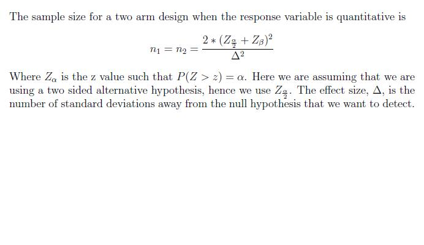

The sample size formula for a quantitative response variable that is measured once, using a 2 arm design is provided below. The following are several assumptions that are necessary to derive the sample size formula.
- Independent Random samples were selected from the target populations.
- The populations, from which the samples are selected, are normally distributed.
- We are interested in equal sample sizes.
- The variances for each population are equal.
- 